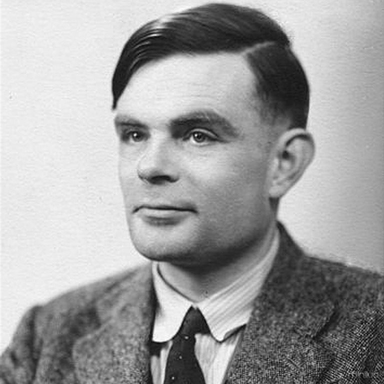

Alan Turing
Alan Turing was een Engelse wiskundige, computerwetenschapper, filosoof, logicus, cryptanalyticus en theoretische bioloog. Zijn volledige naam is Alan Mathison Turing. Hij is geboren in Engeland op 23 juni 1912 en gestorven op 7 juni 1954. Hij is 41 geworden en hij heeft waarschijnlijk zelfmoord gepleegd.

Alan Turing
Kindertijd en carrière
Turing was de zoon van een ambtenaar. Hij is geschoold op de beste privéschool. In 1931 ging hij naar de University of Cambridge. Hij slaagde in 1934 en twee jaar later presenteerde hij het idee van zijn "Turing machine". Een voorganger van de moderne computer. Daarna studeerde hij verder aan Princeton University. Toen hij klaar was ging hij naar een codebrekende groep. Tijdens de Tweede Wereldoorlog kraakte hij de Enigma code die de Duiters gebruikten om geheime informatie te versturen. Sommige zeggen dat als Turing en zijn collega's niet de code hadden gekraakt dat de oorlog twee tot vier jaar langer had geduurd. Nadat de oorlog was afgelopen ging Turing verder met zijn computeronderzoek. In 1950 presenteerde hij de "Turing test". Dat was een onderzoek om te kijken of de computer zelf kan denken. Dat noemen we tegenwoordig Artifical Intellegence of kort gezegd AI. Dit concept is nog steeds belangrijk tot op de dag van vandaag.
Turing's Dood
De dood van Turing kwam door meerdere gebeurtenissen. Hieronder worden die uitgelegd. Turing was gay en dat was toen nog strafbaar. In januari 1952 belde hij de politie, omdat er ingebroken was in zijn huis. Hij werd gedwongen om te bekennen dat hij een sexuele relatie had met de inbreker, Arnold Murray. Ondanks dat hij een oorlogsheld was werd hij gearresteerd. Hij kreeg de keuze tussen de gevangenis of het verwijderen van zijn libido. Hij koos voor het laatste. Dit betekende dat zijn vergunning om in Amerika te blijven werd ingenomen. Hij mocht Amerika niet meer binnenkomen. Hij dacht dat dit het einde van zijn carrière was. Rond die tijd schreef hij een brief naar de vriend waarin hij schreef: "I have had a dream indicating rather clearly that I am on the way to being hetero, though I don’t accept it with much enthusiasm either awake or in the dreams." Vertaald naar het Nederlands zegt hij dat hij een droom heeft gehad die duidelijk aangeeft dat hij op weg is om hetero te worden, terwijl hij dit niet met veel enthousiasme accepteert in de droom en wanneer hij wakker is. Op 7 juni 1954 heeft Alan Turing zelfmoord gepleegd. Ongeveer 13 jaar later werd homoseksualiteit gedeetelijk gedecriminaliseerd. Pas in 2009 verontschuldigde de regering zich. Daarna omschreef de premier Gordon Brown de behandeling van Turing als gruwelijk en volkomen oneerlijk. Hij schreef in een statement het volgende: "We’re sorry, you deserved so much better." In het Nederlands betekent dit dat het hem spijt en dat Turing meer had verdiend.